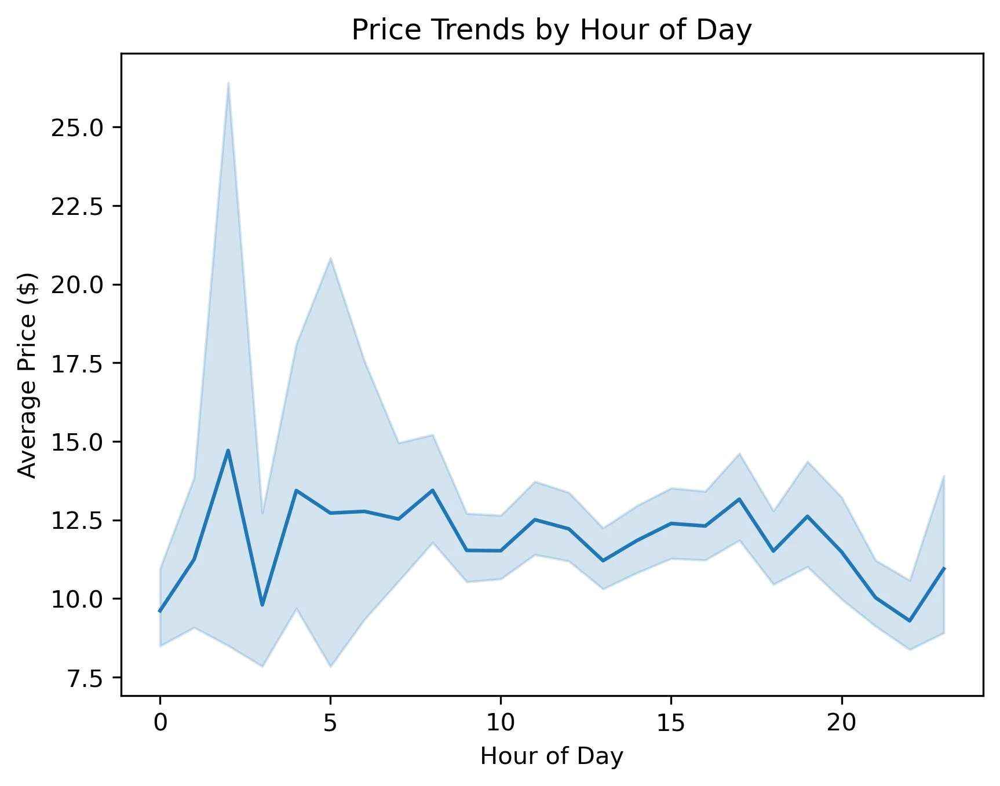

Figure 5: Average prices show variability in early morning hours

Figure 6: Weak correlation between customer age and income levels
Data Analyst Portfolio showcasing analytics projects in Python, SQL, Tableau, and Excel
Instacart, a prominent online grocery platform, sought to refine its marketing strategies by gaining deeper insight into customer purchasing patterns and product demand. This comprehensive analysis examined over 32 million transaction records to uncover behavioural trends, identify distinct customer segments, and provide actionable recommendations for targeted marketing initiatives.
The project encompassed the complete data analytics workflow, from initial data acquisition and rigorous quality assurance through advanced feature engineering and customer profiling, culminating in strategic recommendations grounded in empirical evidence.
The analysis integrated multiple data sources including order histories, product catalogues spanning 134 aisles and 21 departments, and customer demographic information. This comprehensive dataset enabled a thorough examination of purchasing behaviour across temporal, geographic, and demographic dimensions.
Analysis of ordering behaviour across the 24 hour cycle revealed distinct patterns in customer activity. Orders concentrate heavily during daytime hours, with peak activity occurring between 10:00 and 15:00.
Figure 1: Order volume peaks between 10:00 and 15:00, with minimal activity from 02:00 to 06:00
Insight: The concentration of 18.7 million orders during peak hours (10:00 to 16:00) compared to just 887,000 during quiet periods (00:00 to 07:00) suggests optimal windows for promotional campaigns and operational scheduling.
Segmentation of customers based on lifetime order frequency revealed that Regular customers represent the largest segment, followed by Loyal customers and New customers. This distribution indicates that the majority of Instacart's transaction volume derives from established, returning customers.
Figure 2: Regular customers generate the highest order volume, demonstrating strong customer retention
| Segment | Classification Criteria | Order Volume |
|---|---|---|
| Regular Customers | 11 to 40 lifetime orders | 15,876,776 records |
| Loyal Customers | Over 40 lifetime orders | 10,284,093 records |
| New Customers | 10 or fewer lifetime orders | 6,243,990 records |
Comprehensive customer profiling based on age, income, and family status identified six distinct segments. Seniors with Dependents emerged as the dominant profile, followed by Established Families. These family oriented segments collectively represent the majority of transaction volume.
Figure 3: Seniors with Dependents and Established Families represent the largest customer segments
Analysis of customer profiles across geographic regions revealed consistent patterns. Seniors with Dependents represent approximately 37% of customers in each region. Established Families maintain a steady 23 to 24% share across all regions, suggesting marketing strategies can be applied nationally with regional fine tuning.
Figure 4: Customer profile distribution remains remarkably consistent across all four U.S. regions
A significant disparity emerged in average product prices across customer segments. Loyal customers demonstrated a mean purchase price of $10.39, whilst new customers averaged $13.29 per product. This $2.90 differential suggests that established customers prioritise value and everyday essentials, whereas new customers may experiment with premium offerings.
Figure 5: Average prices show variability in early morning hours
Figure 6: Weak correlation between customer age and income levels
| Category | Order Interval | Records |
|---|---|---|
| Frequent Customers | 10 days or fewer between orders | 21,559,853 |
| Regular Customers | 11 to 20 days between orders | 7,208,564 |
| Non Frequent Customers | Over 20 days between orders | 3,636,437 |
This project comprised 11 Jupyter notebooks following a structured analytical workflow. Key technical approaches included: